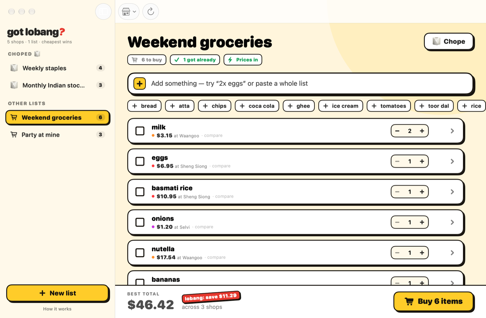
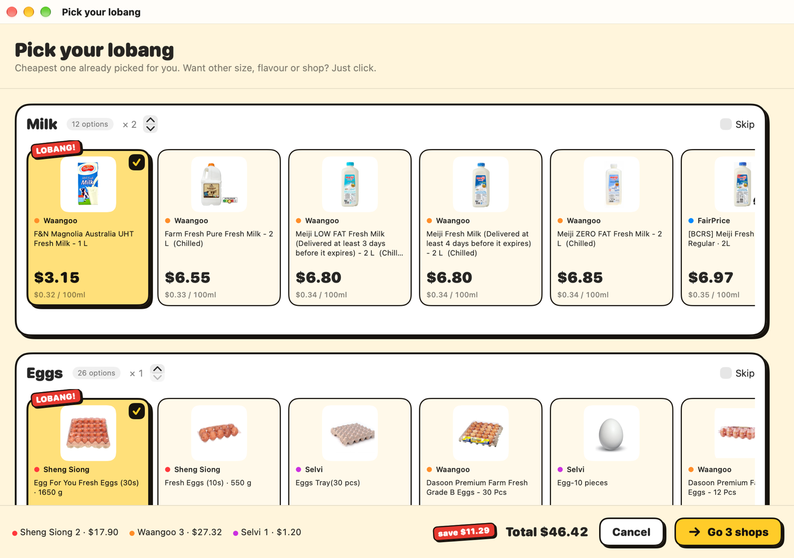
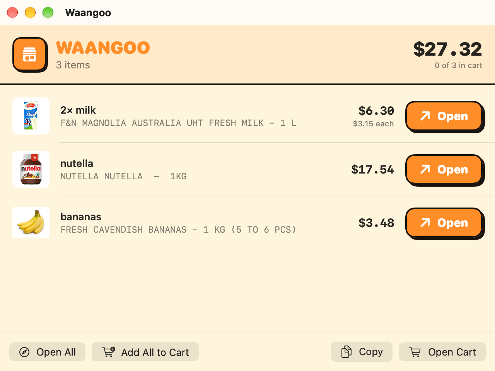
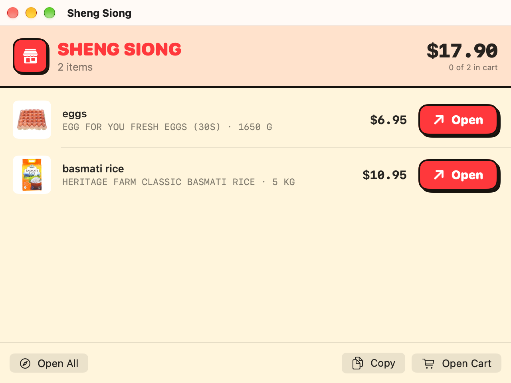
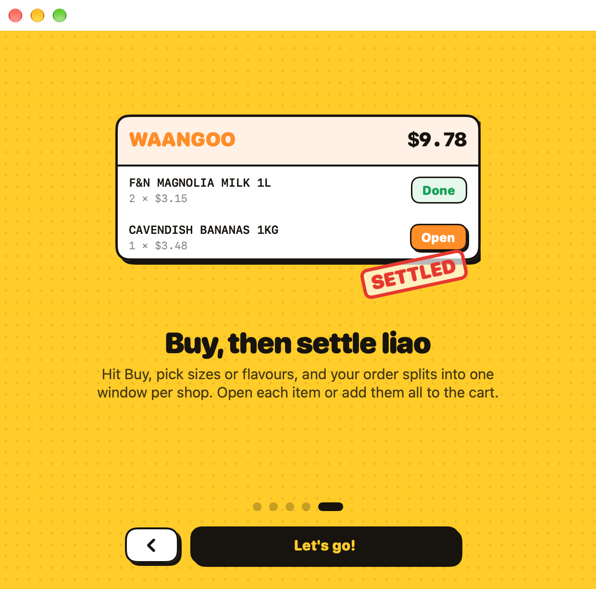
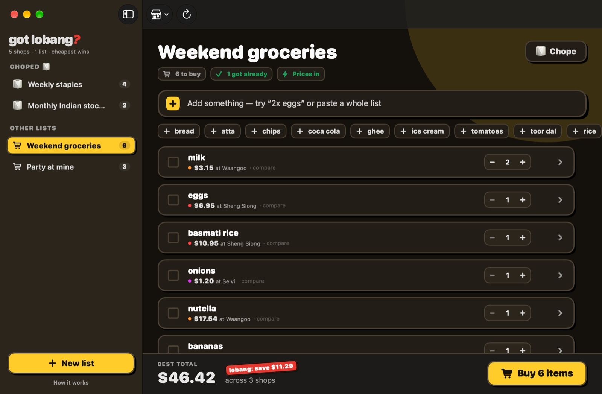

Write your grocery list once. got lobang? kaypohs Sheng Siong, FairPrice, Waangoo, Selvi and KiasuMart at the same time, finds where each item is cheapest, and splits your cart by shop.

save $11.29! 5 shops checkedType items like you'd text your mum — “2x eggs”, “basmati rice”, “nutella” — or click a quick-add chip for things you buy often. Paste a whole list from Notes and every line becomes an item.
Each item shows its cheapest shop right away; click › to compare all five shops side by side. Tick ☑ what you've already got.
Hit Buy and every product from every shop lines up as a card, best value first. The cheapest is already picked and marked LOBANG!
Want the 2L instead of 1L, or a different flavour? Just click another card. Prices are compared per 100g, 100ml or piece, so the bigger pack wins only when it's really cheaper.

Your order splits into a window for each shop with just the items to buy there. Open each product in your browser, or add everything to the cart at once on Waangoo, Selvi and KiasuMart.
Then settle liao. 🎉


See how much you save versus the usual price at the other shops — per item, per list, per trip.
Weekly staples, monthly stock-up — chope them to pin them on top. All ticked? Shop again resets the list in one click.
Unit pricing per 100g / 100ml / piece, and smart matching so “milk” doesn't find milk powder or body lotion.
A quick animated tour opens the first time you launch. Replay it anytime from Help.
Looks right whichever way your Mac is set. Universal app — native on Apple Silicon and Intel.
No account, no sign-up, no tracking. Lists live on your Mac; the app only talks to the shops' own websites.

A five-card tour shows you how it works — make a list, see where it's cheapest, tick what you've got, then buy. Takes 30 seconds, skip anytime.
Dark mode, same lobang.

Version 2.1 · Free · Universal (Apple Silicon & Intel) · macOS 14 Sonoma or later
Download GotLobang.dmgOn iPhone instead? Get the iPhone app — it's free too, and lives on your Home Screen.